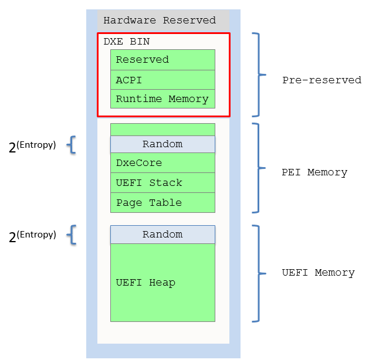
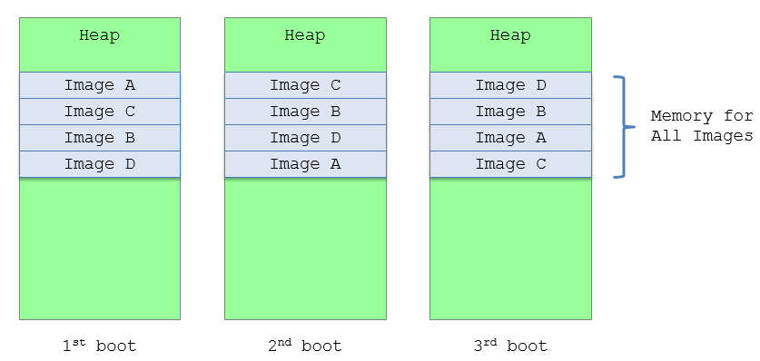
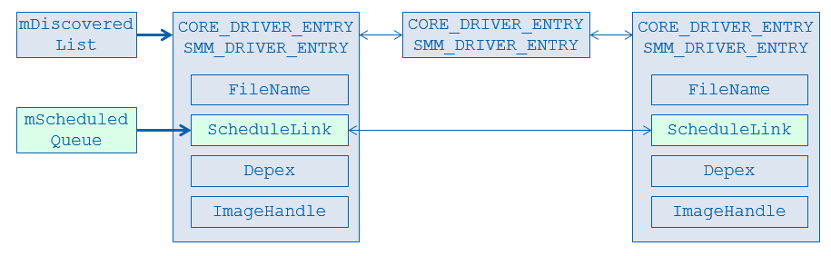

Enable Address Sace Layout Randomization (ASLR) for UEFI in EDK II
In order to enable address space layout randomization, we provide a sample implementation for randomization in UEFI.
Randomization control. The
gEfiAslrPkgTokenSpaceGuid.PcdASLRMinimumEntropyBits(https://github.com/jyao1/SecurityEx/blob/master/AslrPkg/AslrPkg.dec) to indicate the ASLR entropy bits. 0 means no randomization. The entropy bit controls the how much randomness we want to achieve.UEFI stack randomization. The stack for
DxeCoreis allocated inHandOffToDxeCore()https://github.com/jyao1/SecurityEx/blob/master/AslrPkg/Override/MdeModulePkg/Core/DxeIplPeim/DxeLoad.c. Before the Driver eXecution Environment (DXE) stack is allocated from heap in the Pre-EFI Initialization (PEI) phase,AllocateRandomPages()is called to allocate some random pages to shift the PEI heap.DxeCore randomization. The
DxeCoreis also loaded from PEI heap byDxeIplFindDxeCore()https://github.com/jyao1/SecurityEx/blob/master/AslrPkg/Override/MdeModulePkg/Core/DxeIplPeim/DxeLoad.c.AllocateRandomPages()also helps shift theDxeCorememory.UEFI heap randomization. The heap for
DxeCoreis reported by PEI and discovered byDxeCorein https://github.com/jyao1/SecurityEx/blob/master/AslrPkg/Override/MdeModulePkg/Core/Dxe/Gcd/Gcd.c. AfterCoreInitializeMemoryServices()adds available memory to UEFI heap,AllocateRandomPages()is called to allocate some random pages to shift the UEFI heap.NOTE: The OS aware memory, such as runtime, ACPI, and reserved memory are pre-reserved in PEI phase. They are not impacted by the UEFI heap randomization.
The final memory layout in UEFI is shown in figure 3-4.

Figure 3-4 UEFI memory layout
UEFI image randomization. The UEFI randomized heap shifts are implemented with a fixed offset. As such, even memory allocation shifts occur with the fixed offset. It is not good enough for a Portable Executable (PE) Common Object File Format(COFF) (PE/COFF) image load.
For PE/COFF images we use “image shuffle” to randomize the image load order. Whenever the
DxeCorediscovers a new firmware volume (FV), theDxeCoreunconditionally load all the images in this FV with a random order. See figure 3-5 Image shuffle.

Figure 3-5 Image Shuffle
For example, if a FV contains 4 images – A, B, C, D. The loaded image order in memory is different among the 1st boot, the 2nd boot, and the 3rd boot.
Now let’s see how the Core shuffles images.
The DxeCore maintains the image information in below data structure:

Figure 3-6 Core Image Database
The top left most mDiscoveredList is a linked list for all discovered images in the firmware volume. The mScheduledQueue is a subset of mDiscoveredList and mScheduledQueue records the linked list of the image whose dependency is satisfied and ready to run.
The pseudo code for current core dispatch is below:
==============================
Scan FV, put to DiscoveredList.
Check Apriori, put to Scheduled List.
While (TRUE) {
For image in ScheduledList {
LoadImage()
call entrypoint // StartImage()
}
Check dependency, put to Scheduled List.
}
==============================
With ASLR capability, the core dispatch logic is updated to below:
==============================
Scan FV, put to DiscoveredList.
For image in DiscoveredList {
Copy Information to local cache
}
Shuffle image order in local cache
For image in local cache {
LoadImage()
}
The code above is the additional step to implement the image shuffle. The LoadImage() is moved earlier.
Check Apriori, put to Scheduled List.
While (TRUE) {
For image in ScheduledList {
call entrypoint // StartImage()
}
Check dependency, put to Scheduled List.
}
==============================
The image shuffle capability is controlled by the Platform Configuration Database (PCD) Variable: gEfiAslrPkgTokenSpaceGuid.PcdImageShuffleEnable(https://github.com/jyao1/SecurityEx/blob/master/AslrPkg/AslrPkg.dec).
When this PCD is TRUE, the DxeCore dispatcher function CoreFwVolEventProtocolNotify()(https://github.com/jyao1/SecurityEx/blob/master/AslrPkg/Override/MdeModulePkg/Core/Dxe/Dispatcher/Dispatcher.c) calls DxeCoreLoadImages() to load all images with shuffled order before the dependency section is evaluated, as we discussed above.
Image shuffle just controls image load, it does not control image start. The image start process is unchanged. DxeCore only starts an image after its dependency is satisfied.